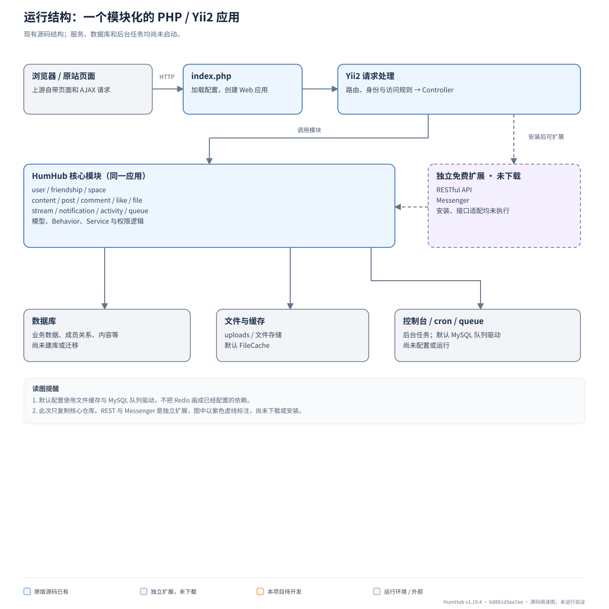
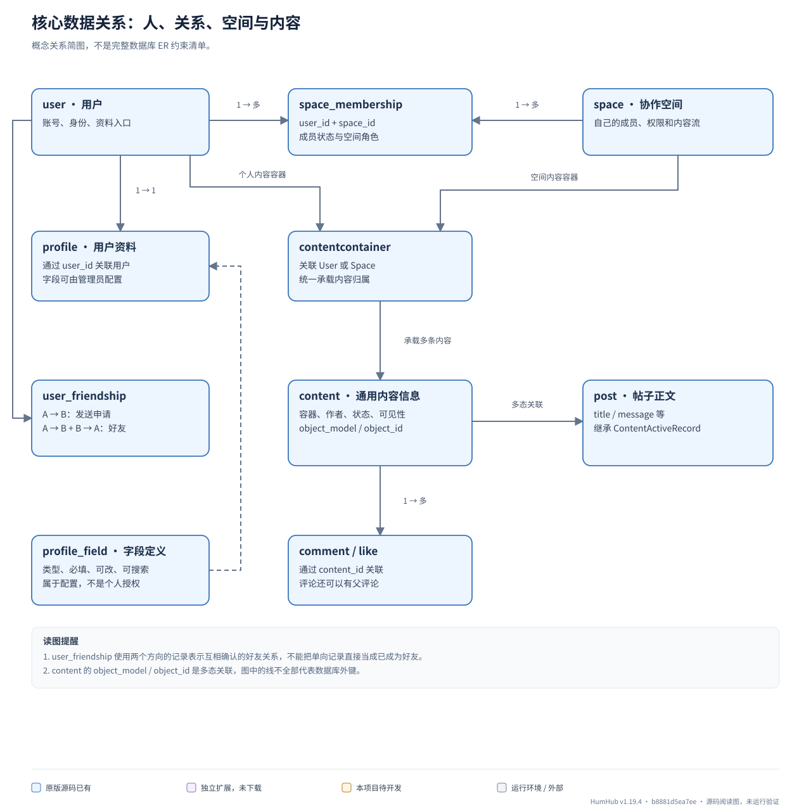
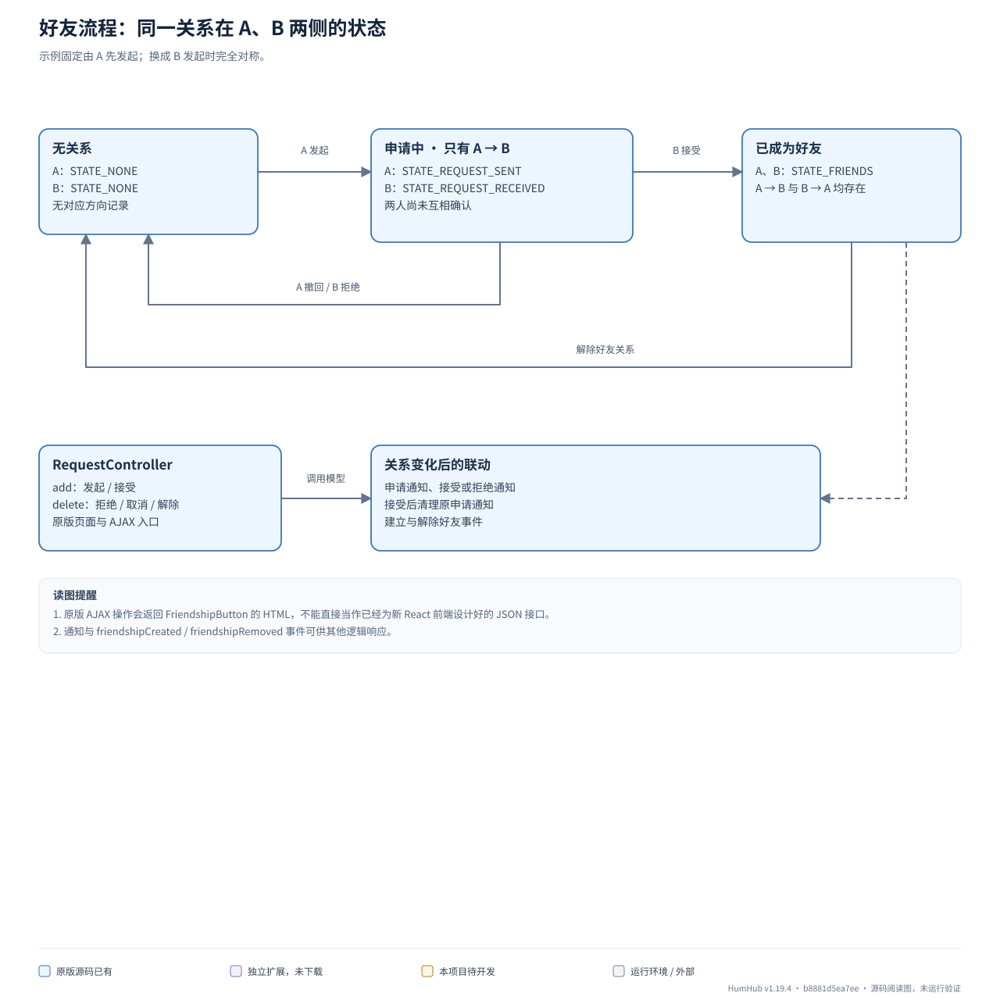
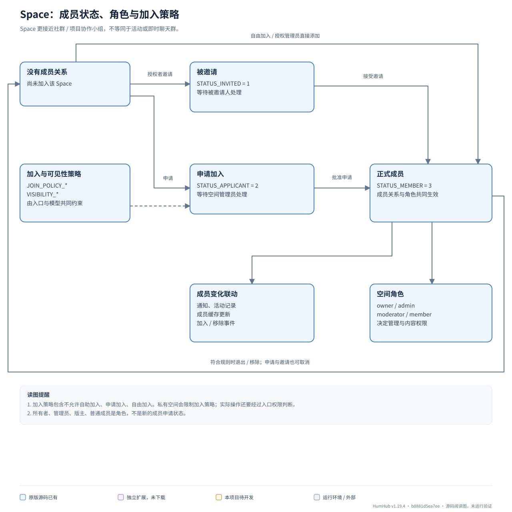
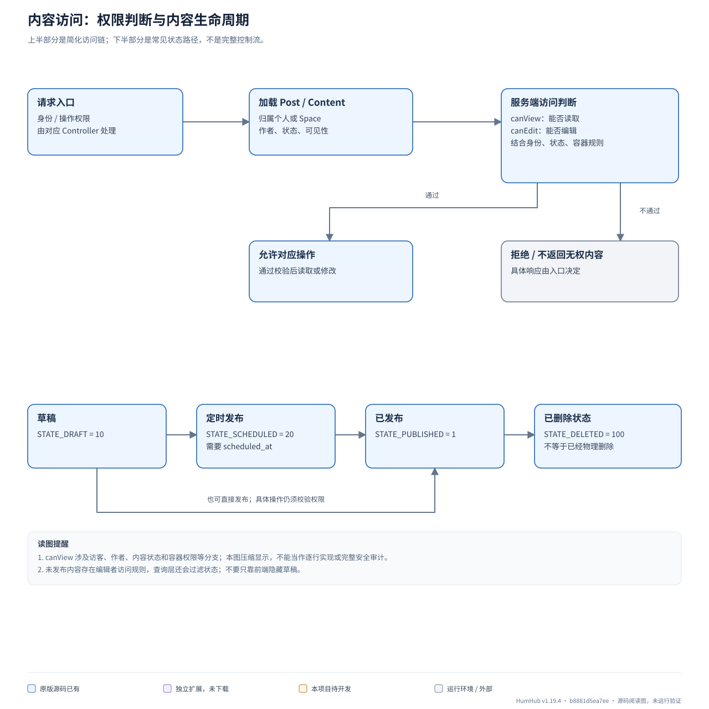
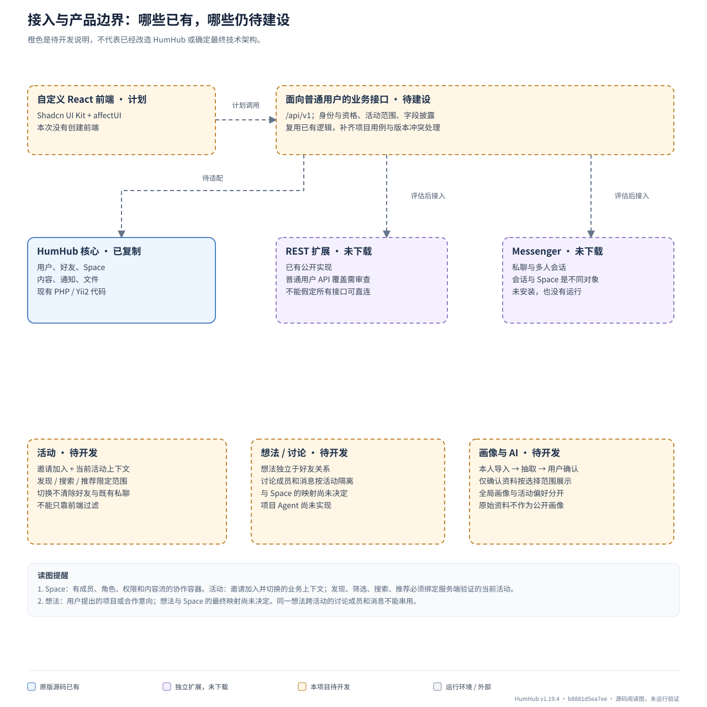

HumHub 后端阅读图
从原版源码理解现有能力，再看新前端与项目规则需要补什么。
当前仅下载并复制源码，新增本目录图稿。未安装依赖、建库或启动应用；REST 与 Messenger 尚未下载。橙色区域均为待开发说明。
Space · 已有源码有成员、角色、权限和内容流的社群 / 协作小组。
活动 · 待开发邀请加入并切换的业务上下文，限定发现、搜索和推荐范围。
想法 · 待开发项目或合作意向。讨论按活动隔离，与 Space 的映射未决定。
聊天会话 · 扩展未下载Messenger 的私聊 / 多人聊天对象，不等同于 Space。
运行结构：一个模块化的 PHP / Yii2 应用
先把 HumHub 理解成一个应用。用户、好友、Space、内容和通知是同一应用内的模块，不是多个微服务。当前实现使用 Controller、ActiveRecord、Behavior 和部分 Service；这张图不把它描述成已经完成的 Clean Architecture。


- 默认配置使用文件缓存与 MySQL 队列驱动，不把 Redis 画成已经配置的依赖。
- 此次只复制核心仓库。REST 与 Messenger 是独立扩展，图中以紫色虚线标注，尚未下载或安装。
核心数据关系：人、关系、空间与内容
用户与 Space 都可以成为内容容器。帖子正文与通用内容元数据分开；评论和点赞再关联内容。好友和空间成员是两种独立关系。


- user_friendship 使用两个方向的记录表示互相确认的好友关系，不能把单向记录直接当成已成为好友。
- content 的 object_model / object_id 是多态关联，图中的线不全部代表数据库外键。
- profile_field 是字段定义；不等于已经实现用户逐字段选择 authenticated / friends / private 的授权。
本地源码依据
- protected/humhub/modules/user/models/User.php
- protected/humhub/modules/user/models/Profile.php
- protected/humhub/modules/user/models/ProfileField.php
- protected/humhub/modules/friendship/models/Friendship.php
- protected/humhub/modules/space/models/Membership.php
- protected/humhub/modules/content/models/ContentContainer.php
- protected/humhub/modules/content/models/Content.php
- protected/humhub/modules/post/models/Post.php
- protected/humhub/modules/comment/models/Comment.php
- protected/humhub/modules/like/models/Like.php
好友流程：同一关系在 A、B 两侧的状态
原版好友逻辑把单向申请和互相确认区分开。RequestController 的 add 同时承担发起和接受，delete 承担取消申请或解除关系。


- 原版 AJAX 操作会返回 FriendshipButton 的 HTML，不能直接当作已经为新 React 前端设计好的 JSON 接口。
- 通知与 friendshipCreated / friendshipRemoved 事件可供其他逻辑响应。
- 项目所需的来源验证和 expected_version 不在本图中冒充已完成，需要后续单独适配。
Space：成员状态、角色与加入策略
Space 拥有成员、权限和内容流。成员状态决定是否正式加入；角色决定加入后能做什么。加入策略与空间可见性也是分别配置的概念。


- 加入策略包含不允许自助加入、申请加入、自由加入。私有空间会限制加入策略；实际操作还要经过入口权限判断。
- 所有者、管理员、版主、普通成员是角色，不是新的成员申请状态。
- 退出或移除受规则限制；例如当前所有者不能直接按普通成员路径移除。
- 原版没有你们的当前活动上下文与发现/推荐范围规则；本图没有把它们画成已有 Space 能力。
内容访问：权限判断与内容生命周期
帖子正文由 Post 管理，通用 Content 负责归属、状态与可见性。读取、编辑和状态转换是不同检查，页面显示与否不能替代服务端判断。


- canView 涉及访客、作者、内容状态和容器权限等分支；本图压缩显示，不能当作逐行实现或完整安全审计。
- 未发布内容存在编辑者访问规则，查询层还会过滤状态；不要只靠前端隐藏草稿。
- Content 的 PRIVATE 表示随容器解释的私有内容，例如空间成员内容或好友可见的个人内容；不能直接等同于项目画像 private（仅本人）。
- 定时状态要求 scheduled_at。任务代码存在不代表当前已经运行定时发布。置顶、归档等属性也不等同于发布状态。
接入与产品边界：哪些已有，哪些仍待建设
Space、活动、想法、聊天会话要分别理解。当前仅完成原版下载与副本，没有安装扩展，没有实现下面的项目 API 或产品规则。


- Space：有成员、角色、权限和内容流的协作容器。活动：邀请加入并切换的业务上下文；发现、筛选、搜索、推荐必须绑定服务端验证的当前活动。
- 想法：用户提出的项目或合作意向；想法与 Space 的最终映射尚未决定。同一想法跨活动的讨论成员和消息不能串用。
- 聊天会话：Messenger 的独立对象。关注想法、加入讨论、成为好友彼此独立；切活动不清除既有好友与私聊。
- 公开帖子作者的合法联系入口可以跨活动，但不是全站人物检索。
- 新接口应面向普通用户用例复用核心逻辑；不能把管理员令牌交给浏览器，也不能让模型自行认定用户已授权。
- 本文不修改项目既有技术方案；PHP/Yii2 是这份上游副本的事实，橙色区域是产品缺口而非已批准的部署拆分。